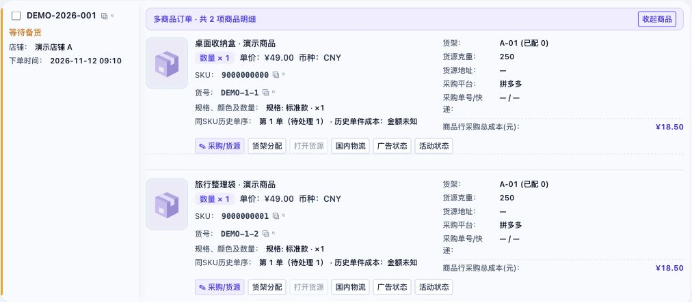
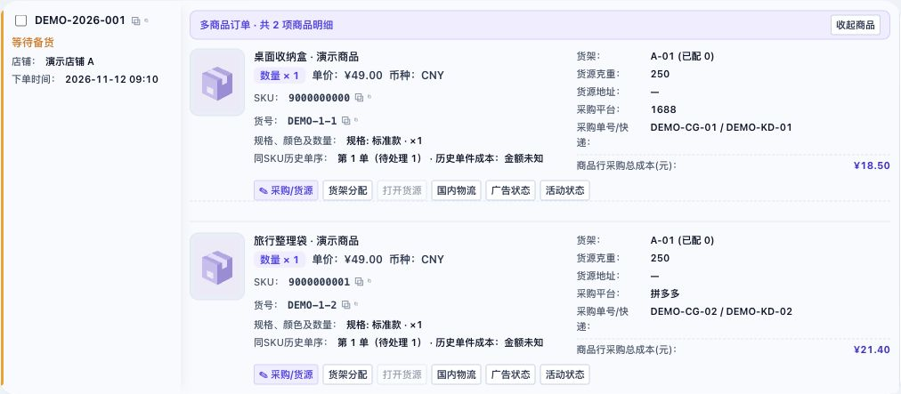

Ozon 一单两件商品，采购单号和成本怎么逐件核对？
先用 Ozon 平台单号定位订单，再按货号逐行核对。每一行分别记录采购平台、采购单号、国内快递单号和这行商品的采购总成本。改完一行，就能用另一行的单号和金额交叉检查。
打开这笔样例订单 ↗免登录，在新标签页打开。样例数据保存在当前演示页面，刷新或点「重置演示」可从头练习。
找到同一笔订单里的两件商品
打开演示订单 DEMO-2026-001，点「展开其余 1 项商品」。桌面收纳盒的货号是 DEMO-1-1，旅行整理袋是 DEMO-1-2。初始状态下，两行的采购单号、快递单号都是空的，成本都显示 18.50 元。


把两份采购资料填到对应货号
下面两份练习记录分别来自 1688 和拼多多。采购单号用来回查采购订单，国内快递单号用来查包裹。弹窗里的「商品行采购总成本(元)」填写这一行全部数量的采购成本。样例中两行的数量都是 1。
| 核对字段 | 桌面收纳盒 | 旅行整理袋 |
|---|---|---|
| 货号 | DEMO-1-1 | DEMO-1-2 |
| 采购平台 | 1688 | 拼多多 |
| 采购单号 | DEMO-CG-01 | DEMO-CG-02 |
| 国内快递单号 | DEMO-KD-01 | DEMO-KD-02 |
| 最终行成本 | 18.50 元 | 21.40 元 |
- 在桌面收纳盒这一行点「采购/货源」。选 1688，填入收纳盒对应的两个单号和 18.50 元，点「保存采购与货源」。
- 在旅行整理袋这一行点「采购/货源」。选拼多多，填入第二件商品对应的两个单号。为练习更正，先把成本填成 23.40 元并保存。
改错后，把两行重新打开看一次
重新打开旅行整理袋的「采购/货源」，把 23.40 改为 21.40 元并保存。再次打开该行，检查成本及两个尾号为 02 的单号。然后打开桌面收纳盒，核对成本仍是 18.50 元，两个单号仍以 01 结尾。


按你的采购流程看一次演示
告诉我们你们在哪一步核对采购订单、由谁登记到仓包裹。预约邮件会带上这篇指南的名称，方便从相关环节开始演示。
预约采购流程演示